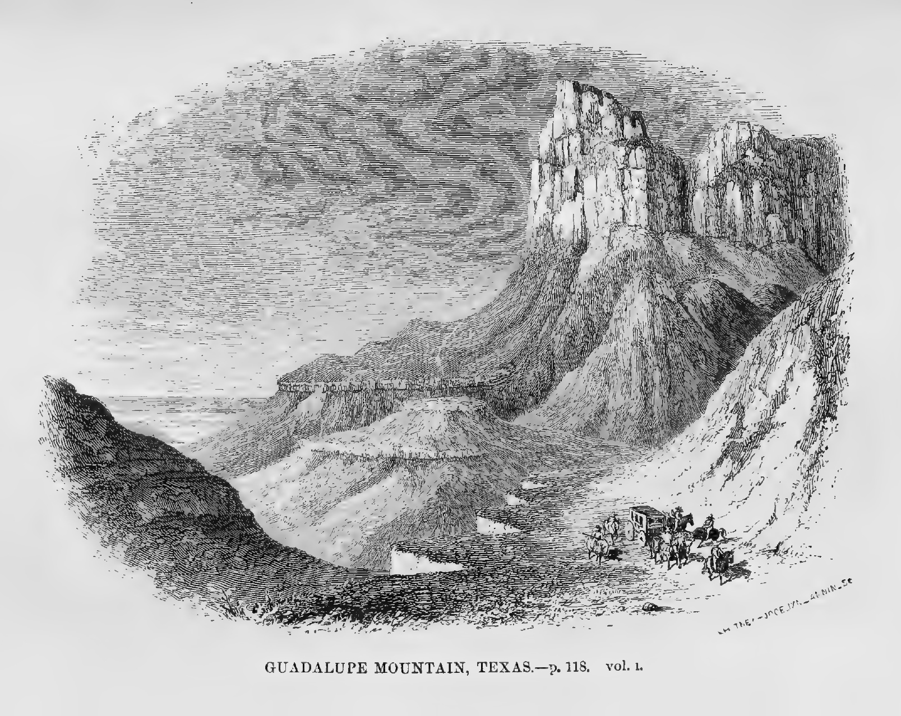
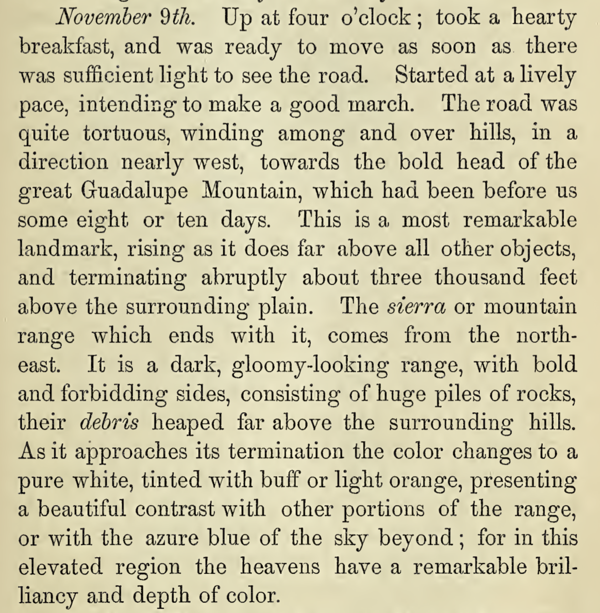
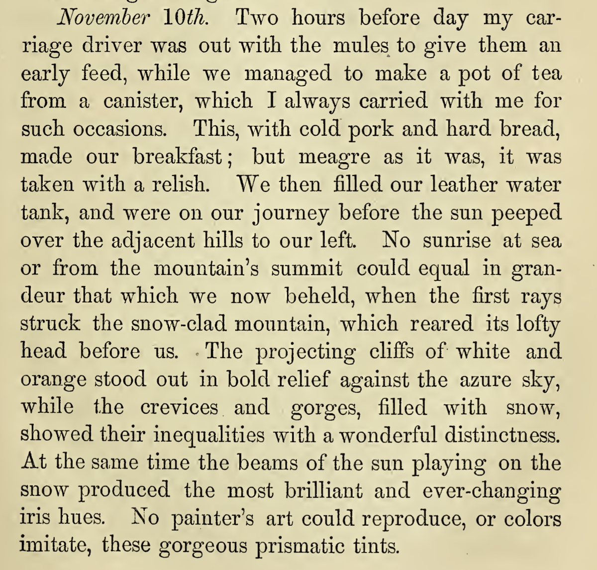

Bartlett — Personal Narrative of Explorations (Guadalupes)
John Russell Bartlett, U.S.–Mexico Boundary Commissioner (1850–53), publishes his two-volume Personal Narrative. Approaching the western escarpment in November 1850 he describes Guadalupe Mountain as a dark, gloomy-looking range with bold and forbidding sides — among the earliest published eyewitness accounts of the west face; Bartlett Peak is later named for him.



John Russell Bartlett
Bartlett, J.R., 1854, Personal Narrative of Explorations and Incidents in Texas, New Mexico, California, Sonora, and Chihuahua, Connected with the United States and Mexican Boundary Commission, during the years 1850, '51, '52, and '53: New York, D. Appleton & Company, 2 vols., https://archive.org/details/personalnarrativ01bart